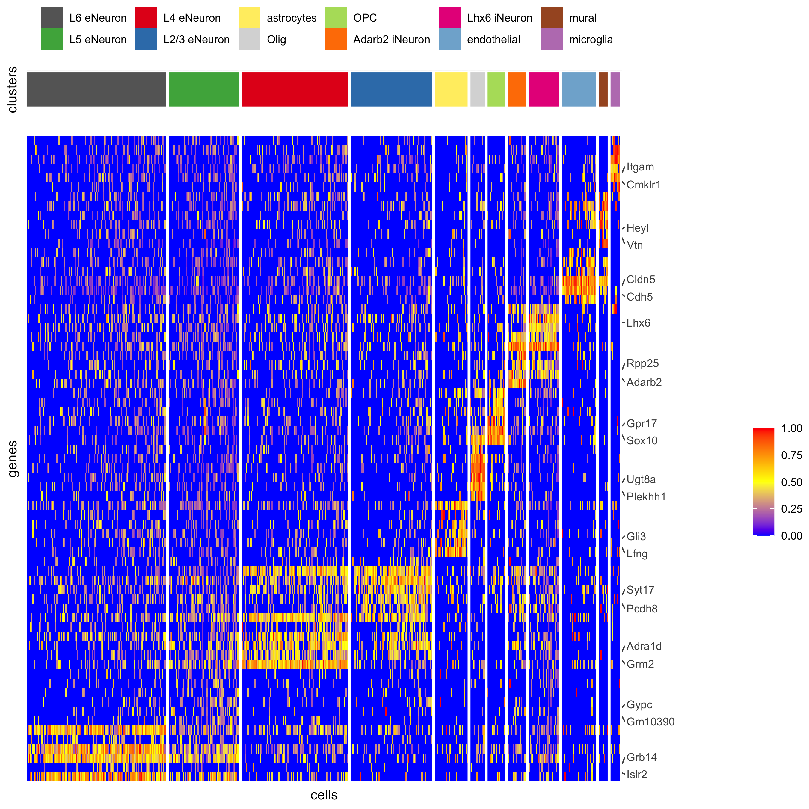
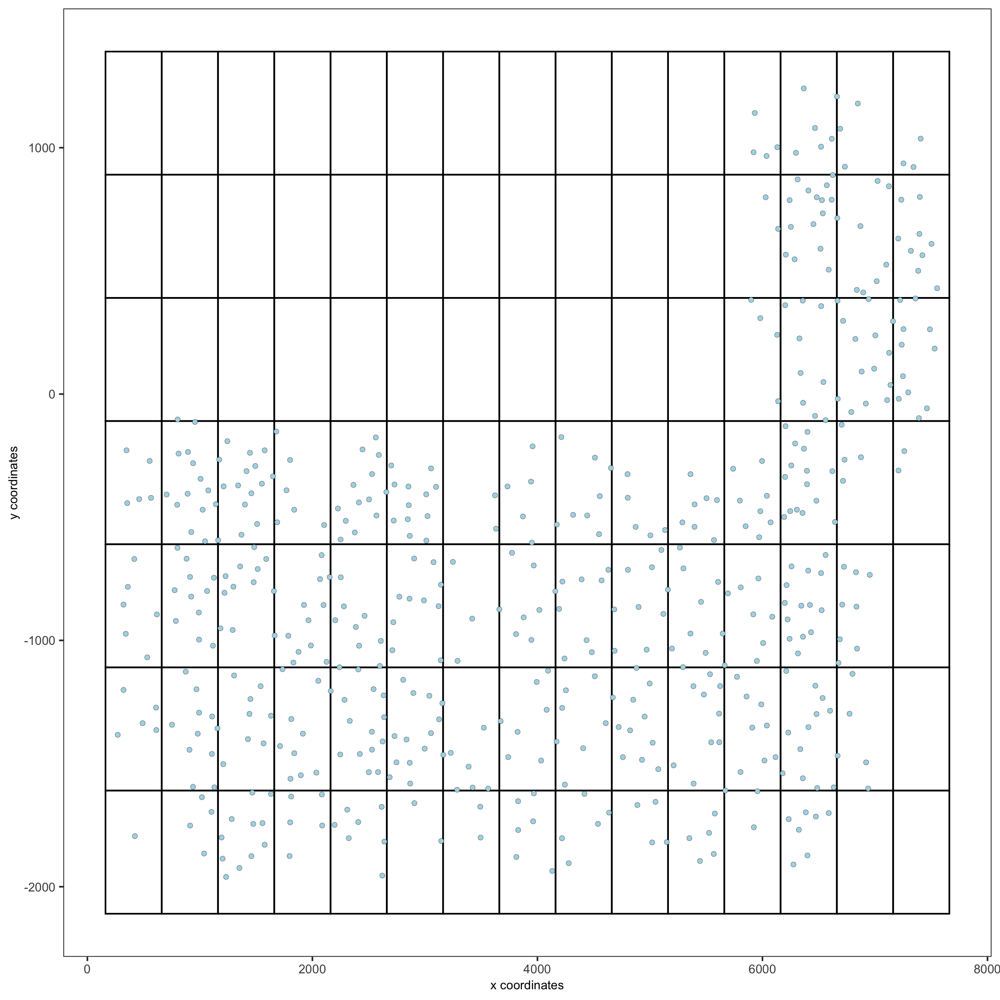
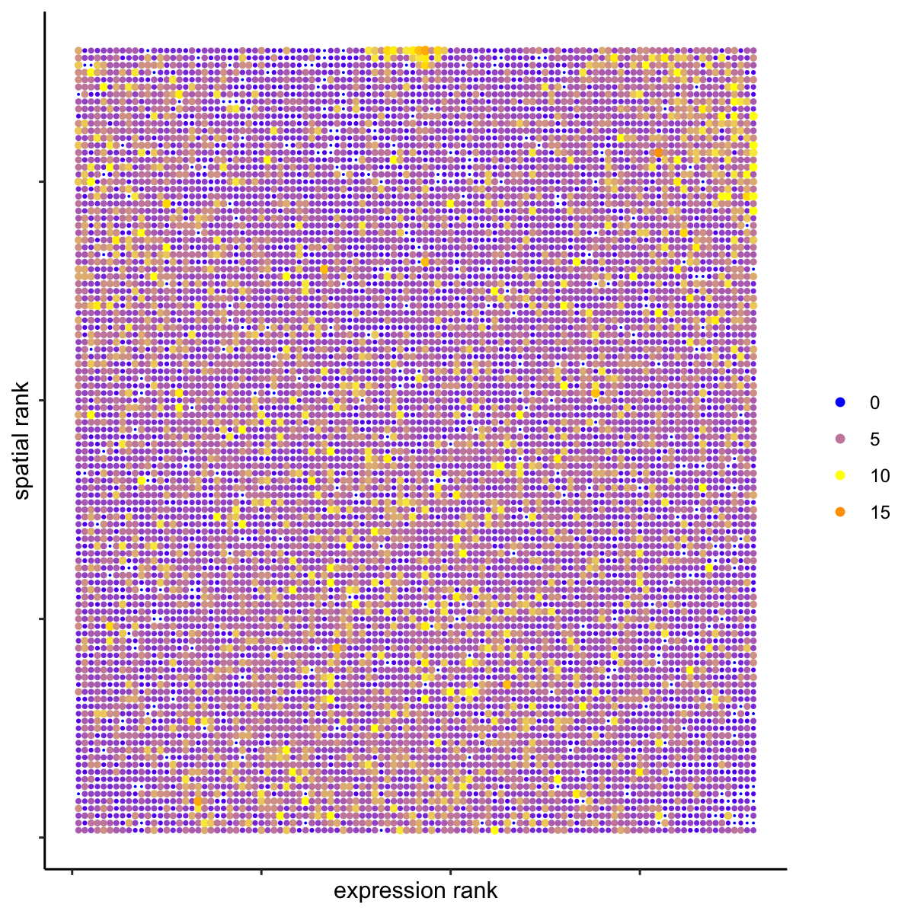

Start Giotto
library(Giotto) # 1. set working directory my_working_dir = '/path/to/directory/' # 2. set giotto python path # set python path to your preferred python version path # set python path to NULL if you want to automatically install (only the 1st time) and use the giotto miniconda environment python_path = NULL if(is.null(python_path)) { installGiottoEnvironment() }
Dataset explanation
Several fields - containing 100’s of cells - in the mouse cortex and subventricular zone were imaged for seqFISH+. The coordinates of the cells within each field are independent of each other, so in order to visualize and process all cells together imaging fields will be stitched together by providing x and y-offset values specific to each field. These offset values are known or estimates based on the original raw image:
- load somatosensory (SS) cortex and subventricular zone (SVZ) gene expression matrix
- load cell coordinates and field of view (FOV) information in order to stitch imaging fields
Dataset download
The seqFISH+ data to run this tutorial can be downloaded directly using the getSpatialDataset function or can also be found here.
# download data to working directory #### # if wget is installed, set method = 'wget' getSpatialDataset(dataset = 'seqfish_SS_cortex', directory = my_working_dir, method = 'wget')
Part 1: Giotto global instructions and preparations
# 1. (optional) set Giotto instructions instrs = createGiottoInstructions(save_plot = TRUE, show_plot = FALSE, save_dir = my_working_dir, python_path = python_path) # 2. create giotto object from provided paths #### expr_path = paste0(my_working_dir, "cortex_svz_expression.txt") loc_path = paste0(my_working_dir, "cortex_svz_centroids_coord.txt") meta_path = paste0(my_working_dir, "cortex_svz_centroids_annot.txt") # 3. This dataset contains multiple field of views which need to be stitched together ## first merge location and additional metadata SS_locations = data.table::fread(loc_path) cortex_fields = data.table::fread(meta_path) SS_loc_annot = data.table::merge.data.table(SS_locations, cortex_fields, by = 'ID') SS_loc_annot[, ID := factor(ID, levels = paste0('cell_',1:913))] data.table::setorder(SS_loc_annot, ID) ## create file with offset information my_offset_file = data.table::data.table(field = c(0, 1, 2, 3, 4, 5, 6), x_offset = c(0, 1654.97, 1750.75, 1674.35, 675.5, 2048, 675), y_offset = c(0, 0, 0, 0, -1438.02, -1438.02, 0)) ## create a stitch file stitch_file = stitchFieldCoordinates(location_file = SS_loc_annot, offset_file = my_offset_file, cumulate_offset_x = T, cumulate_offset_y = F, field_col = 'FOV', reverse_final_x = F, reverse_final_y = T) stitch_file = stitch_file[,.(ID, X_final, Y_final)] my_offset_file = my_offset_file[,.(field, x_offset_final, y_offset_final)]
part 2: Create Giotto object & process data
## create Giotto object SS_seqfish <- createGiottoObject(raw_exprs = expr_path, spatial_locs = stitch_file, offset_file = my_offset_file, instructions = instrs) ## add additional annotation if wanted SS_seqfish = addCellMetadata(SS_seqfish, new_metadata = cortex_fields, by_column = T, column_cell_ID = 'ID') ## subset data to the cortex field of views cell_metadata = pDataDT(SS_seqfish) cortex_cell_ids = cell_metadata[FOV %in% 0:4]$cell_ID SS_seqfish = subsetGiotto(SS_seqfish, cell_ids = cortex_cell_ids) ## filter SS_seqfish <- filterGiotto(gobject = SS_seqfish, expression_threshold = 1, gene_det_in_min_cells = 10, min_det_genes_per_cell = 10, expression_values = c('raw'), verbose = T) ## normalize SS_seqfish <- normalizeGiotto(gobject = SS_seqfish, scalefactor = 6000, verbose = T) ## add gene & cell statistics SS_seqfish <- addStatistics(gobject = SS_seqfish) ## adjust expression matrix for technical or known variables SS_seqfish <- adjustGiottoMatrix(gobject = SS_seqfish, expression_values = c('normalized'), batch_columns = NULL, covariate_columns = c('nr_genes', 'total_expr'), return_gobject = TRUE, update_slot = c('custom')) ## visualize spatPlot(gobject = SS_seqfish, save_param = list(save_name = '2_a_spatplot'))
part 3: dimension reduction
## highly variable genes (HVG) SS_seqfish <- calculateHVG(gobject = SS_seqfish, method = 'cov_loess', difference_in_cov = 0.1, save_param = list(save_name = '3_a_HVGplot', base_height = 5, base_width = 5))

## select genes based on HVG and gene statistics, both found in gene metadata gene_metadata = fDataDT(SS_seqfish) featgenes = gene_metadata[hvg == 'yes' & perc_cells > 4 & mean_expr_det > 0.5]$gene_ID ## run PCA on expression values (default) SS_seqfish <- runPCA(gobject = SS_seqfish, genes_to_use = featgenes, scale_unit = F, center = F) screePlot(SS_seqfish, save_param = list(save_name = '3_b_screeplot'))


## run UMAP and tSNE on PCA space (default) SS_seqfish <- runUMAP(SS_seqfish, dimensions_to_use = 1:15, n_threads = 10) plotUMAP(gobject = SS_seqfish, save_param = list(save_name = '3_d_UMAP_reduction'))

SS_seqfish <- runtSNE(SS_seqfish, dimensions_to_use = 1:15) plotTSNE(gobject = SS_seqfish, save_param = list(save_name = '3_e_tSNE_reduction'))

part 4: cluster
## sNN network (default) SS_seqfish <- createNearestNetwork(gobject = SS_seqfish, dimensions_to_use = 1:15, k = 15) ## Leiden clustering SS_seqfish <- doLeidenCluster(gobject = SS_seqfish, resolution = 0.4, n_iterations = 1000) plotUMAP(gobject = SS_seqfish, cell_color = 'leiden_clus', show_NN_network = T, point_size = 2.5, save_param = list(save_name = '4_a_UMAP_leiden'))

## Leiden subclustering for specified clusters SS_seqfish = doLeidenSubCluster(gobject = SS_seqfish, cluster_column = 'leiden_clus', resolution = 0.2, k_neighbors = 10, hvg_param = list(method = 'cov_loess', difference_in_cov = 0.1), pca_param = list(expression_values = 'normalized', scale_unit = F), nn_param = list(dimensions_to_use = 1:5), selected_clusters = c(5, 6, 7), name = 'sub_leiden_clus_select') ## set colors for clusters subleiden_order = c( 1.1, 5.1, 5.2, 2.1, 3.1, 4.1, 6.2, 6.1, 7.1, 7.2, 9.1, 8.1) subleiden_colors = Giotto:::getDistinctColors(length(subleiden_order)) names(subleiden_colors) = subleiden_order plotUMAP(gobject = SS_seqfish, cell_color = 'sub_leiden_clus_select', cell_color_code = subleiden_colors, show_NN_network = T, point_size = 2.5, show_center_label = F, legend_text = 12, legend_symbol_size = 3, save_param = list(save_name = '4_b_UMAP_leiden_subcluster'))

## show cluster relationships showClusterHeatmap(gobject = SS_seqfish, cluster_column = 'sub_leiden_clus_select', save_param = list(save_name = '4_c_heatmap', units = 'cm'), row_names_gp = grid::gpar(fontsize = 9), column_names_gp = grid::gpar(fontsize = 9))
showClusterDendrogram(SS_seqfish, h = 0.5, rotate = T, cluster_column = 'sub_leiden_clus_select', save_param = list(save_name = '4_d_dendro', units = 'cm'))

part 5: visualize spatial and expression space
# expression and spatial spatDimPlot(gobject = SS_seqfish, cell_color = 'sub_leiden_clus_select', cell_color_code = subleiden_colors, dim_point_size = 2, spat_point_size = 2, save_param = list(save_name = '5_a_covis_leiden'))

# selected groups and provide new colors groups_of_interest = c(6.1, 6.2, 7.1, 7.2) group_colors = c('red', 'green', 'blue', 'purple'); names(group_colors) = groups_of_interest spatDimPlot(gobject = SS_seqfish, cell_color = 'sub_leiden_clus_select', dim_point_size = 2, spat_point_size = 2, select_cell_groups = groups_of_interest, cell_color_code = group_colors, save_param = list(save_name = '5_b_covis_leiden_selected'))

part 6: cell type marker gene detection
## gini ## gini_markers_subclusters = findMarkers_one_vs_all(gobject = SS_seqfish, method = 'gini', expression_values = 'normalized', cluster_column = 'sub_leiden_clus_select', min_genes = 20, min_expr_gini_score = 0.5, min_det_gini_score = 0.5) topgenes_gini = gini_markers_subclusters[, head(.SD, 2), by = 'cluster'] # violinplot violinPlot(SS_seqfish, genes = unique(topgenes_gini$genes), cluster_column = 'sub_leiden_clus_select', strip_text = 8, strip_position = 'right', cluster_custom_order = unique(topgenes_gini$cluster), save_param = c(save_name = '6_a_violinplot_gini', base_width = 5, base_height = 10))

# cluster heatmap topgenes_gini2 = gini_markers_subclusters[, head(.SD, 6), by = 'cluster'] plotMetaDataHeatmap(SS_seqfish, selected_genes = unique(topgenes_gini2$genes), custom_gene_order = unique(topgenes_gini2$genes), custom_cluster_order = unique(topgenes_gini2$cluster), metadata_cols = c('sub_leiden_clus_select'), x_text_size = 10, y_text_size = 10, save_param = c(save_name = '6_b_metaheatmap_gini'))

part 7: cell type annotation
## general cell types # create vector with names clusters_cell_types_cortex = c('L6 eNeuron', 'L4 eNeuron', 'L2/3 eNeuron', 'L5 eNeuron', 'Lhx6 iNeuron', 'Adarb2 iNeuron', 'endothelial', 'mural', 'OPC','Olig', 'astrocytes', 'microglia') names(clusters_cell_types_cortex) = c(1.1, 2.1, 3.1, 4.1, 5.1, 5.2, 6.1, 6.2, 7.1, 7.2, 8.1, 9.1) SS_seqfish = annotateGiotto(gobject = SS_seqfish, annotation_vector = clusters_cell_types_cortex, cluster_column = 'sub_leiden_clus_select', name = 'cell_types') # cell type order and colors cell_type_order = c('L6 eNeuron', 'L5 eNeuron', 'L4 eNeuron', 'L2/3 eNeuron', 'astrocytes', 'Olig', 'OPC','Adarb2 iNeuron', 'Lhx6 iNeuron', 'endothelial', 'mural', 'microglia') cell_type_colors = Giotto:::getDistinctColors(length(cell_type_order)) names(cell_type_colors) = cell_type_order ## violinplot violinPlot(gobject = SS_seqfish, genes = unique(topgenes_gini$genes), strip_text = 7, strip_position = 'right', cluster_custom_order = cell_type_order, cluster_column = 'cell_types', color_violin = 'cluster', save_param = c(save_name = '7_a_violinplot', base_width = 5))

## co-visualization spatDimPlot(gobject = SS_seqfish, cell_color = 'cell_types', dim_point_size = 2, spat_point_size = 2, dim_show_cluster_center = F, dim_show_center_label = T, save_param = c(save_name = '7_b_covisualization'))

## heatmap genes vs cells gini_markers_subclusters[, cell_types := clusters_cell_types_cortex[cluster] ] gini_markers_subclusters[, cell_types := factor(cell_types, cell_type_order)] data.table::setorder(gini_markers_subclusters, cell_types) plotHeatmap(gobject = SS_seqfish, genes = gini_markers_subclusters[, head(.SD, 3), by = 'cell_types']$genes, gene_order = 'custom', gene_custom_order = unique(gini_markers_subclusters[, head(.SD, 3), by = 'cluster']$genes), cluster_column = 'cell_types', cluster_order = 'custom', cluster_custom_order = unique(gini_markers_subclusters[, head(.SD, 3), by = 'cell_types']$cell_types), legend_nrows = 2, save_param = c(save_name = '7_c_heatmap'))

plotHeatmap(gobject = SS_seqfish, cluster_color_code = cell_type_colors, genes = gini_markers_subclusters[, head(.SD, 6), by = 'cell_types']$genes, gene_order = 'custom', gene_label_selection = gini_markers_subclusters[, head(.SD, 2), by = 'cluster']$genes, gene_custom_order = unique(gini_markers_subclusters[, head(.SD, 6), by = 'cluster']$genes), cluster_column = 'cell_types', cluster_order = 'custom', cluster_custom_order = unique(gini_markers_subclusters[, head(.SD, 3), by = 'cell_types']$cell_types), legend_nrows = 2, save_param = c(save_name = '7_d_heatmap_selected'))

part 8: spatial grid
## spatial grid SS_seqfish <- createSpatialGrid(gobject = SS_seqfish, sdimx_stepsize = 500, sdimy_stepsize = 500, minimum_padding = 50) spatPlot(gobject = SS_seqfish, show_grid = T, point_size = 1.5, save_param = c(save_name = '8_a_grid'))

part 9: spatial network
## delaunay network: stats + creation plotStatDelaunayNetwork(gobject = SS_seqfish, maximum_distance = 400, save_plot = F) SS_seqfish = createSpatialNetwork(gobject = SS_seqfish, minimum_k = 2, maximum_distance_delaunay = 400) ## create spatial networks based on k and/or distance from centroid SS_seqfish <- createSpatialNetwork(gobject = SS_seqfish, method = 'kNN', k = 5, name = 'spatial_network') SS_seqfish <- createSpatialNetwork(gobject = SS_seqfish, method = 'kNN', k = 10, name = 'large_network') SS_seqfish <- createSpatialNetwork(gobject = SS_seqfish, method = 'kNN', k = 100, maximum_distance_knn = 200, minimum_k = 2, name = 'distance_network') ## visualize different spatial networks on first field (~ layer 1) cell_metadata = pDataDT(SS_seqfish) field1_ids = cell_metadata[FOV == 0]$cell_ID subSS_seqfish = subsetGiotto(SS_seqfish, cell_ids = field1_ids) spatPlot(gobject = subSS_seqfish, show_network = T, network_color = 'blue', spatial_network_name = 'Delaunay_network', point_size = 2.5, cell_color = 'cell_types', save_param = c(save_name = '9_a_spatial_network_delaunay', base_height = 6))

spatPlot(gobject = subSS_seqfish, show_network = T, network_color = 'blue', spatial_network_name = 'spatial_network', point_size = 2.5, cell_color = 'cell_types', save_param = c(save_name = '9_b_spatial_network_k3', base_height = 6))

spatPlot(gobject = subSS_seqfish, show_network = T, network_color = 'blue', spatial_network_name = 'large_network', point_size = 2.5, cell_color = 'cell_types', save_param = c(save_name = '9_c_spatial_network_k10', base_height = 6))

part 10: spatial genes
Individual spatial genes
# 3 new methods to identify spatial genes km_spatialgenes = binSpect(SS_seqfish) spatGenePlot(SS_seqfish, expression_values = 'scaled', genes = km_spatialgenes[1:4]$genes, point_shape = 'border', point_border_stroke = 0.1, show_network = F, network_color = 'lightgrey', point_size = 2.5, cow_n_col = 2, save_param = list(save_name = '10_a_spatialgenes_km'))
Spatial genes co-expression modules
## spatial co-expression patterns ## ext_spatial_genes = km_spatialgenes[1:500]$genes # 1. calculate gene spatial correlation and single-cell correlation # create spatial correlation object spat_cor_netw_DT = detectSpatialCorGenes(SS_seqfish, method = 'network', spatial_network_name = 'Delaunay_network', subset_genes = ext_spatial_genes) # 2. cluster correlated genes & visualize spat_cor_netw_DT = clusterSpatialCorGenes(spat_cor_netw_DT, name = 'spat_netw_clus', k = 8) heatmSpatialCorGenes(SS_seqfish, spatCorObject = spat_cor_netw_DT, use_clus_name = 'spat_netw_clus', save_param = c(save_name = '10_b_spatialcoexpression_heatmap', base_height = 6, base_width = 8, units = 'cm'), heatmap_legend_param = list(title = NULL))

# 3. rank spatial correlated clusters and show genes for selected clusters netw_ranks = rankSpatialCorGroups(SS_seqfish, spatCorObject = spat_cor_netw_DT, use_clus_name = 'spat_netw_clus', save_param = c(save_name = '10_c_spatialcoexpression_rank', base_height = 3, base_width = 5)) top_netw_spat_cluster = showSpatialCorGenes(spat_cor_netw_DT, use_clus_name = 'spat_netw_clus', selected_clusters = 6, show_top_genes = 1)

# 4. create metagene enrichment score for clusters cluster_genes_DT = showSpatialCorGenes(spat_cor_netw_DT, use_clus_name = 'spat_netw_clus', show_top_genes = 1) cluster_genes = cluster_genes_DT$clus; names(cluster_genes) = cluster_genes_DT$gene_ID SS_seqfish = createMetagenes(SS_seqfish, gene_clusters = cluster_genes, name = 'cluster_metagene') spatCellPlot(SS_seqfish, spat_enr_names = 'cluster_metagene', cell_annotation_values = netw_ranks$clusters, point_size = 1.5, cow_n_col = 3, save_param = c(save_name = '10_d_spatialcoexpression_metagenes', base_width = 11, base_height = 6))
part 11: HMRF spatial domains
hmrf_folder = paste0(my_working_dir,'/','11_HMRF/') if(!file.exists(hmrf_folder)) dir.create(hmrf_folder, recursive = T) my_spatial_genes = km_spatialgenes[1:100]$genes # do HMRF with different betas HMRF_spatial_genes = doHMRF(gobject = SS_seqfish, expression_values = 'scaled', spatial_genes = my_spatial_genes, spatial_network_name = 'Delaunay_network', k = 9, betas = c(28,2,3), output_folder = paste0(hmrf_folder, '/', 'Spatial_genes/SG_top100_k9_scaled')) ## view results of HMRF for(i in seq(28, 32, by = 2)) { viewHMRFresults2D(gobject = SS_seqfish, HMRFoutput = HMRF_spatial_genes, k = 9, betas_to_view = i, point_size = 2) } ## add HMRF of interest to giotto object SS_seqfish = addHMRF(gobject = SS_seqfish, HMRFoutput = HMRF_spatial_genes, k = 9, betas_to_add = c(28), hmrf_name = 'HMRF_2') ## visualize spatPlot(gobject = SS_seqfish, cell_color = 'HMRF_2_k9_b.28', point_size = 3, coord_fix_ratio = 1, save_param = c(save_name = '11_HMRF_2_k9_b.28', base_height = 3, base_width = 9, save_format = 'pdf'))
part 12: cell neighborhood: cell-type/cell-type interactions
cell_proximities = cellProximityEnrichment(gobject = SS_seqfish, cluster_column = 'cell_types', spatial_network_name = 'Delaunay_network', adjust_method = 'fdr', number_of_simulations = 2000) ## barplot cellProximityBarplot(gobject = SS_seqfish, CPscore = cell_proximities, min_orig_ints = 5, min_sim_ints = 5, save_param = c(save_name = '12_a_barplot_cell_cell_enrichment'))

## heatmap cellProximityHeatmap(gobject = SS_seqfish, CPscore = cell_proximities, order_cell_types = T, scale = T, color_breaks = c(-1.5, 0, 1.5), color_names = c('blue', 'white', 'red'), save_param = c(save_name = '12_b_heatmap_cell_cell_enrichment', unit = 'in'))

## network cellProximityNetwork(gobject = SS_seqfish, CPscore = cell_proximities, remove_self_edges = T, only_show_enrichment_edges = T, save_param = c(save_name = '12_c_network_cell_cell_enrichment'))

## network with self-edges cellProximityNetwork(gobject = SS_seqfish, CPscore = cell_proximities, remove_self_edges = F, self_loop_strength = 0.3, only_show_enrichment_edges = F, rescale_edge_weights = T, node_size = 8, edge_weight_range_depletion = c(1, 2), edge_weight_range_enrichment = c(2,5), save_param = c(save_name = '12_d_network_cell_cell_enrichment_self', base_height = 5, base_width = 5, save_format = 'pdf'))
## visualization of specific cell types # Option 1 spec_interaction = "astrocytes--Olig" cellProximitySpatPlot2D(gobject = SS_seqfish, interaction_name = spec_interaction, show_network = T, cluster_column = 'cell_types', cell_color = 'cell_types', cell_color_code = c(astrocytes = 'lightblue', Olig = 'red'), point_size_select = 4, point_size_other = 2, save_param = c(save_name = '12_e_cell_cell_enrichment_selected'))

# Option 2: create additional metadata SS_seqfish = addCellIntMetadata(SS_seqfish, spatial_network = 'spatial_network', cluster_column = 'cell_types', cell_interaction = spec_interaction, name = 'astro_olig_ints') spatPlot(SS_seqfish, cell_color = 'astro_olig_ints', select_cell_groups = c('other_astrocytes', 'other_Olig', 'select_astrocytes', 'select_Olig'), legend_symbol_size = 3, save_param = c(save_name = '12_f_cell_cell_enrichment_sel_vs_not'))

part 13: cell neighborhood: interaction changed genes
## select top 25th highest expressing genes gene_metadata = fDataDT(SS_seqfish) plot(gene_metadata$nr_cells, gene_metadata$mean_expr) plot(gene_metadata$nr_cells, gene_metadata$mean_expr_det) quantile(gene_metadata$mean_expr_det) high_expressed_genes = gene_metadata[mean_expr_det > 1.31]$gene_ID ## identify genes that are associated with proximity to other cell types ICGscoresHighGenes = findICG(gobject = SS_seqfish, selected_genes = high_expressed_genes, spatial_network_name = 'Delaunay_network', cluster_column = 'cell_types', diff_test = 'permutation', adjust_method = 'fdr', nr_permutations = 2000, do_parallel = T, cores = 4) ## visualize all genes plotCellProximityGenes(SS_seqfish, cpgObject = ICGscoresHighGenes, method = 'dotplot', save_param = c(save_name = '13_a_CPG_dotplot', base_width = 5, base_height = 5))

## filter genes ICGscoresFilt = filterICG(ICGscoresHighGenes) ## visualize subset of interaction changed genes (ICGs) ICG_genes = c('Jakmip1', 'Golgb1', 'Dact2', 'Ddx27', 'Abl1', 'Zswim8') ICG_genes_types = c('Lhx6 iNeuron', 'Lhx6 iNeuron', 'L4 eNeuron', 'L4 eNeuron', 'astrocytes', 'astrocytes') names(ICG_genes) = ICG_genes_types plotICG(gobject = SS_seqfish, cpgObject = ICGscoresHighGenes, source_type = 'endothelial', source_markers = c('Pltp', 'Cldn5', 'Apcdd1'), ICG_genes = ICG_genes, save_param = c(save_name = '13_b_ICG_barplot'))
part 14: cell neighborhood: ligand-receptor cell-cell communication
# LR expression # LR activity changes LR_data = data.table::fread(system.file("extdata", "mouse_ligand_receptors.txt", package = 'Giotto')) LR_data[, ligand_det := ifelse(mouseLigand %in% SS_seqfish@gene_ID, T, F)] LR_data[, receptor_det := ifelse(mouseReceptor %in% SS_seqfish@gene_ID, T, F)] LR_data_det = LR_data[ligand_det == T & receptor_det == T] select_ligands = LR_data_det$mouseLigand select_receptors = LR_data_det$mouseReceptor ## get statistical significance of gene pair expression changes based on expression ## expr_only_scores = exprCellCellcom(gobject = SS_seqfish, cluster_column = 'cell_types', random_iter = 1000, gene_set_1 = select_ligands, gene_set_2 = select_receptors, verbose = FALSE) ## get statistical significance of gene pair expression changes upon cell-cell interaction spatial_all_scores = spatCellCellcom(SS_seqfish, spatial_network_name = 'spatial_network', cluster_column = 'cell_types', random_iter = 1000, gene_set_1 = select_ligands, gene_set_2 = select_receptors, adjust_method = 'fdr', do_parallel = T, cores = 4, verbose = 'a little') ## select top LR ## selected_spat = spatial_all_scores[p.adj <= 0.01 & abs(log2fc) > 0.25 & lig_nr >= 4 & rec_nr >= 4] data.table::setorder(selected_spat, -PI) top_LR_ints = unique(selected_spat[order(-abs(PI))]$LR_comb)[1:33] top_LR_cell_ints = unique(selected_spat[order(-abs(PI))]$LR_cell_comb)[1:33] plotCCcomDotplot(gobject = SS_seqfish, comScores = spatial_all_scores, selected_LR = top_LR_ints, selected_cell_LR = top_LR_cell_ints, cluster_on = 'PI', save_param = c(save_name = '14_a_communication_dotplot', save_format = 'pdf'))
## spatial vs rank #### comb_comm = combCCcom(spatialCC = spatial_all_scores, exprCC = expr_only_scores) # highest levels of ligand and receptor prediction # top differential activity levels for ligand receptor pairs plotRankSpatvsExpr(gobject = SS_seqfish, comb_comm, expr_rnk_column = 'LR_expr_rnk', spat_rnk_column = 'LR_spat_rnk', midpoint = 10, save_param = c(save_name = '14_b_expr_vs_spatial_expression_rank', base_height = 4, base_width = 4.5, save_format = 'pdf'))

# recovery plotRecovery(gobject = SS_seqfish, comb_comm, expr_rnk_column = 'LR_expr_rnk', spat_rnk_column = 'LR_spat_rnk', ground_truth = 'spatial', save_param = c(save_name = '14_c_spatial_recovery_expression_rank', base_height = 3, base_width = 3, save_format = 'pdf'))

# highest differential activity of ligand and receptor prediction # top differential activity levels for ligand receptor pairs plotRankSpatvsExpr(gobject = SS_seqfish, comb_comm, expr_rnk_column = 'exprPI_rnk', spat_rnk_column = 'spatPI_rnk', midpoint = 10, save_param = c(save_name = '14_d_expr_vs_spatial_activity', base_height = 4, base_width = 4.5, save_format = 'pdf'))

plotRecovery(gobject = SS_seqfish, comb_comm, expr_rnk_column = 'exprPI_rnk', spat_rnk_column = 'spatPI_rnk', ground_truth = 'spatial', save_param = c(save_name = '14_e_spatial_recovery_activity', base_height = 3, base_width = 3, save_format = 'pdf'))

part 15: export Giotto Analyzer to Viewer
viewer_folder = paste0(my_working_dir, '/', 'Mouse_cortex_viewer') # select annotations, reductions and expression values to view in Giotto Viewer pDataDT(SS_seqfish) exportGiottoViewer(gobject = SS_seqfish, output_directory = viewer_folder, factor_annotations = c('cell_types', 'leiden_clus', 'sub_leiden_clus_select', 'HMRF_2_k9_b.28'), numeric_annotations = 'total_expr', dim_reductions = c('umap'), dim_reduction_names = c('umap'), expression_values = 'scaled', expression_rounding = 3, overwrite_dir = TRUE)